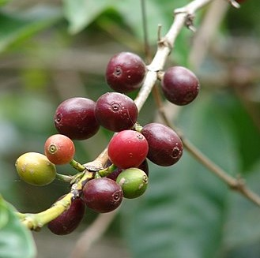
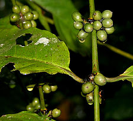
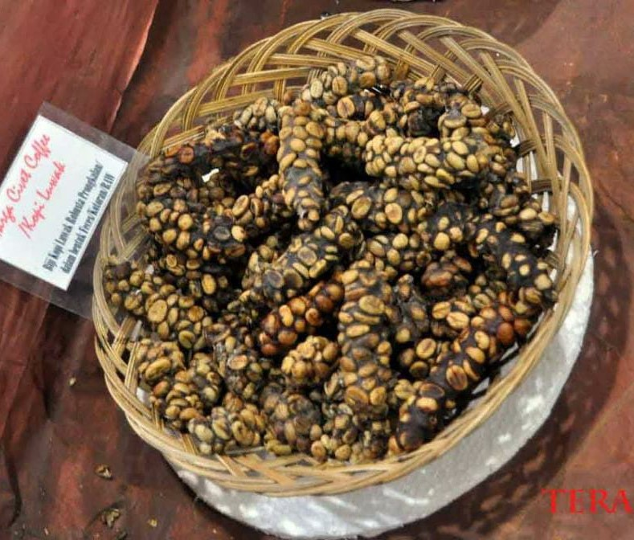
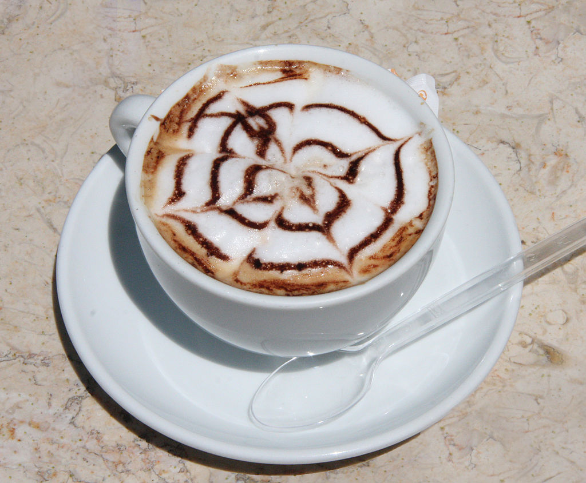
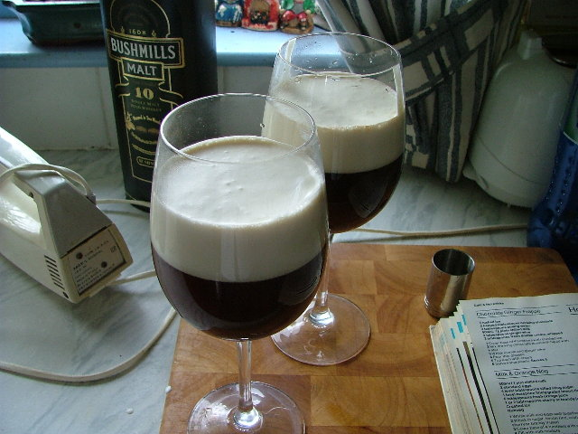
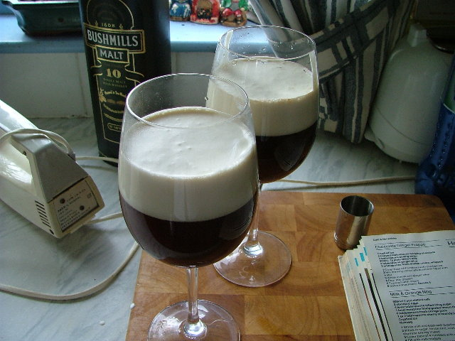

Apa itu Kopi? Apa yang membuat kopi kami istimewa?
.jpeg)
Kopi adalah minuman hasil seduhan biji kopi yang telah disangrai dan dihaluskan menjadi bubuk. Kopi merupakan salah satu komoditas di dunia yang dibudidayakan lebih dari 50 negara. Dua spesies pohon kopi yang dikenal secara umum yaitu Kopi Robusta(Coffea canephora) dan Kopi Arabika(Coffea arabica).
Pemerosesan kopi sebelum dapat diminum melalui proses panjang, yaitu dari pemanenan biji kopi yang telah matang baik dengan cara mesin maupun dengan tangan kemudian dilakukan pemrosesan biji kopi dan pengeringan sebelum menjadi kopi gelondong. Proses selanjutnya, yaitu penyangraian dengan tingkat derajat yang bervariasi. Setelah penyangraian, biji kopi digiling atau dihaluskan menjadi bubuk kopi sebelum kopi dapat diminum.
Etimologi
Kata kopi sendiri awalnya berasal dari bahasa Arab: قهوة qahwah yang pada masa itu digunakan untuk menyebut minuman anggur, sedangkan kata bunn pada masa itu digunakan untuk menyebut kacang-kacangan. Maka disebutlah qahwah al-bunn yang berarti minuman mirip anggur yang berasal dari biji-bijian seperti kacang. Kemudian kata qahwah lebih digunakan untuk menyebut minuman kopi ini daripada untuk menyebut minuman anggur, sedangkan kata bunn akhirnya lebih digunakan untuk menyebut biji kopi daripada untuk menyebut kacang-kacangan. Kata qahwah kembali mengalami perubahan menjadi kahveh di bahasa Turki dan kemudian berubah lagi menjadi koffie dalam bahasa Belanda. Penggunaan kata koffie segera diserap ke dalam bahasa Indonesia menjadi kata kopi yang dikenal saat ini.
Sejarah
I. Bermula di Afrika
Era penemuan biji kopi dimulai sekitar tahun 800 SM, pendapat lain mengatakan 850 M. Pada saat itu, banyak orang di Benua Afrika, terutama bangsa Etiopia, mengonsumsi biji kopi yang dicampurkan dengan lemak hewan dan anggur untuk memenuhi kebutuhan protein dan energi tubuh. Penemuan kopi sendiri terjadi secara tidak sengaja, ketika penggembala bernama Khalid—seorang Abyssinia—mengamati kawanan kambing gembalaannya yang tetap terjaga bahkan setelah matahari terbenam, setelah memakan sejenis buah beri. Ia pun mencoba memasak dan memakannya. Kebiasaan ini kemudian terus berkembang dan menyebar ke berbagai negara di Afrika. Namun, metode penyajiannya masih menggunakan metode konvensional. Barulah beberapa ratus tahun kemudian, biji kopi ini dibawa melewati Laut Merah dan tiba di Arab dengan metode penyajian yang lebih maju.
II. Penyebaran kopi di Arab
Bangsa Arab yang memiliki peradaban yang lebih maju daripada bangsa Afrika saat itu, tidak hanya memasak biji kopi, tetapi juga direbus untuk diambil sarinya. Pada abad ke-13, umat Islam banyak mengonsumsi kopi sebagai minuman penambah energi saat beribadah di malam hari. Kepopuleran kopi pun turut meningkat seiring dengan penyebaran agama Islam pada saat itu hingga mencapai daerah Afrika Utara, Mediterania, dan India.
Pada masa ini, belum ada budidaya tanaman kopi di luar daerah Arab karena bangsa Arab selalu mengekspor biji kopi yang infertil (tidak subur) dengan cara memasak dan mengeringkannya terlebih dahulu. Hal ini menyebabkan budidaya tanaman kopi tidak memungkinkan. Barulah pada tahun 1600-an, seorang peziarah India bernama Baba Budan berhasil membawa biji kopi fertil keluar dari Mekah dan menumbuhkannya di berbagai daerah di luar Arab.
III. Kopi Mencapai Pasar Eropa
Biji kopi dibawa masuk pertama kali ke Eropa secara resmi pada tahun 1615 oleh seorang saudagar Venesia.Ia mendapatkan pasokan biji kopi dari orang Turki, namun jumlah ini tidaklah mencukupi kebutuhan pasar. Oleh kerena itu, bangsa Eropa mulai membudidayakannya. Bangsa Belanda adalah salah satu negara Eropa pertama yang berhasil membudidayakannya pada tahun 1616. Kemudian pada tahun 1690, biji kopi dibawa ke Pulau Jawa untuk dikultivasi secara besar-besaran. Pada saat itu, Indonesia masih merupakan negara jajahan Kolonial Belanda.
Macam-macam biji kopi

Biji Kopi Arabika
Kopi arabika merupakan tipe kopi tradisional dengan cita rasa terbaik. Sebagian besar kopi yang ada dibuat dengan menggunakan biji kopi jenis ini. Kopi ini berasal dari Etiopia dan sekarang telah dibudidayakan di berbagai belahan dunia, mulai dari Amerika Latin, Afrika Tengah, Afrika Timur, India, dan Indonesia. Secara umum, kopi ini tumbuh di negara-negara beriklim tropis atau subtropis. Kopi arabika tumbuh pada ketinggian 600–2000 m di atas permukaan laut. Tanaman ini dapat tumbuh hingga 3 meter bila kondisi lingkungannya baik. Suhu tumbuh optimalnya adalah 18-26oC. Biji kopi yang dihasilkan berukuran cukup kecil dan berwarna hijau hingga merah gelap.

Biji Kopi Robusta
Kopi robusta pertama kali ditemukan di Kongo pada tahun 1898. Kopi robusta dapat dikatakan sebagai kopi kelas 2, karena rasanya yang lebih pahit, sedikit asam, dan mengandung kafeina dalam kadar yang jauh lebih banyak. Selain itu, cakupan daerah tumbuh kopi robusta lebih luas daripada kopi arabika yang harus ditumbuhkan pada ketinggian tertentu. Kopi robusta dapat ditumbuhkan dengan ketinggian 800 m di atas permukaan laut. Selain itu, kopi jenis ini lebih resisten terhadap serangan hama dan penyakit. Hal ini menjadikan kopi robusta lebih murah. Kopi robusta banyak ditumbuhkan di Afrika Barat, Afrika Tengah, Asia Tenggara, dan Amerika Selatan.

Biji Kopi Luak
Jenis kopi yang lain merupakan turunan atau subvarietas dari kopi arabika dan robusta. Biasanya disetiap daerah penghasil kopi memiliki keunikannya masing-masing dan menjadikannya sebagai suatu subvarietas. Salah satu jenis kopi lain yang terkenal adalah kopi luwak asli Indonesia.
Kopi luak merupakan kopi dengan harga jual tertinggi di dunia.Proses terbentuknya dan rasanya yang unik menjadi alasan utama tingginya harga jual kopi jenis ini. Pada dasarnya, kopi ini merupakan kopi jenis arabika. Biji kopi ini kemudian dimakan oleh luwak atau sejenis musang.Akan tetapi, tidak semua bagian biji kopi ini dapat dicerna oleh hewan ini. Bagian dalam biji ini kemudian akan keluar bersama kotorannya. Karena telah bertahan lama di dalam saluran pencernaan luak, biji kopi ini telah mengalami fermentasi singkat oleh bakteri alami di dalam perutnya yang memberikan cita rasa tambahan yang unik.
Jenis-jenis minuman kopi
  

- Kopi hitam, merupakan hasil ektraksi langsung dari perebusan biji kopi yang disajikan tanpa penambahan perisa apapun.
- Espreso, merupakan kopi yang dibuat dengan mengekstraksi biji kopi menggunakan uap panas pada tekanan tinggi.
- Latte (coffee latte), merupakan sejenis kopi espreso yang ditambahkan susu dengan rasio antara susu dan kopi 3:1.
- Café au lait, serupa dengan caffe latte tetapi menggunakan campuran kopi hitam.
- Caffè macchiato, merupakan kopi espreso yang ditambahkan susu dengan rasio antara kopi dan susu 4:1.
- Kapucino, merupakan kopi dengan penambahan susu, krim, dan serpihan cokelat.
- Dry cappuccino, merupakan kapucino dengan sedikit krim dan tanpa susu.
- Frappé, merupakan espreso yang disajikan dingin.
- Kopi instan, berasal dari biji kopi yang dikeringkan dan digranulasi.
- Kopi Irlandia (irish coffee), merupakan kopi yang dicampur dengan wiski.
- Kopi tubruk, kopi asli Indonesia yang dibuat dengan memasak biji kopi bersama dengan gula.
- Melya, sejenis kopi dengan penambahan bubuk cokelat dan madu.
- Kopi moka, serupa dengan cappuccino dan latte, tetapi dengan penambahan sirup cokelat.
- Oleng, kopi khas Thailand yang dimasak dengan jagung, kacang kedelai, dan wijen.